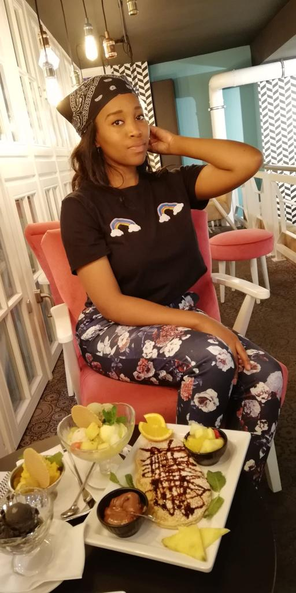
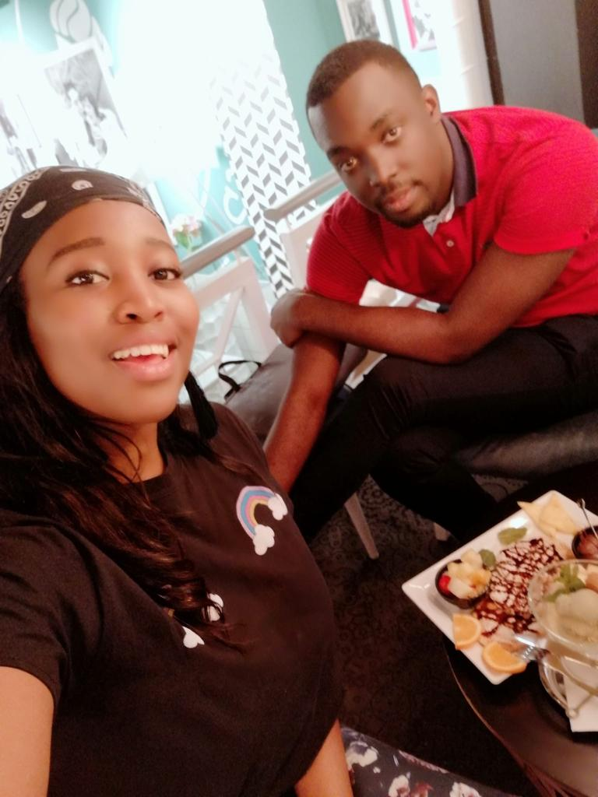
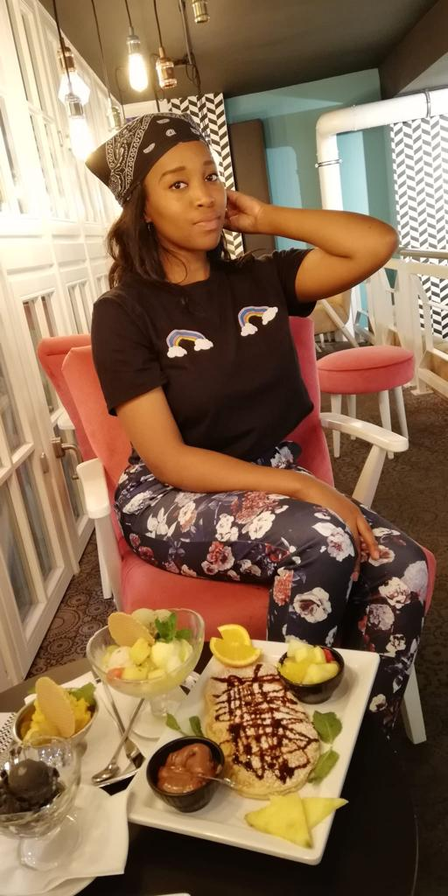
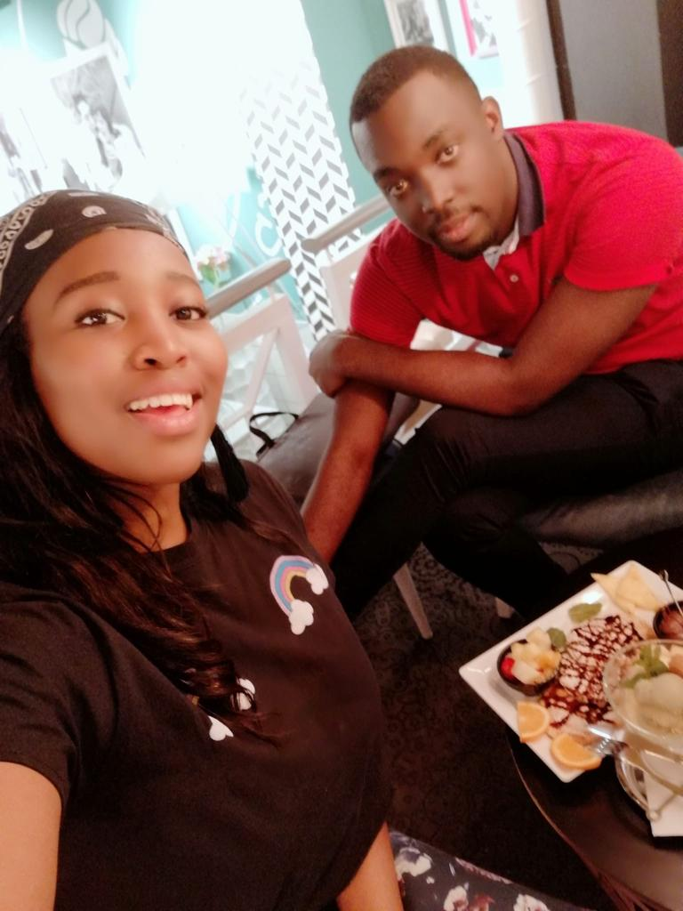

Notre Histoire
À ma bien aimée
Ma bien-aimée, mon coco caramélisé Je me souviens que nous étions dans un vol ensemble en direction de l'Italie, nous allions chercher le Seigneur a une retraite. c´était la deuxième fois qu´on se voyait (Bon la première, je ne sais quoi dire laba si ce n´est qu´on s´était juste salué à ton arrivée au début d'une retraite)
Je me souviens nous descendions les escaliers d'un Mall à Berlin, après avoir goûté à ce premier repas (Riz avec de la viande hachée)
Je me souviens de tous les plats de Eis sur la table devant nous dans un Eiscafé à Bremen (Effectivement elle aime Les crèmes...)
Je me souviens du livreur de courrier qui se tenait dehors avec des cartons de commandes surprises (Elle avait tout préparé pour m'accompagner à cette période difficile où mon papa nous disait au revoir).
Je me souviens de notre première séance de Shooting Photo dans les Bois d'une ville abandonnée dans le Sauerland (J'étais le Photographe en personne) après une retraite qui marquait un point nouveau pour toi et moi. Tu étais si belle et aujourd'hui tu l'es encore plus.
Je me souviens du pasteur qui me disait: "Il faut encadrer les brebis, mais il faut aussi avoir les yeux ouverts" (Il voyait tout ce que je ne voyais pas encore).
Je me souviens de la séparation après cette retraite qui n´était pas si facile...Ce parfum que tu dégageais commençait à m´ensevelir...
Je me souviens de ces appels qui duraient des minutes, des heures et ce de plus en plus... Tes histoires, ta tendresse, ta voix et bien sûr la paix que ton âme dégageait...Je m´y fondais progressivement.
Ta consécration et ta crainte pour le Seigneur commençait à fortement marquer mon esprit.
Ta chaleur maternelle ne pouvait me laisser encore plus résistant.
Voilà toute l'atmosphère que le père a préparé et orchestré autour de moi. Atmosphère dans laquelle j'allais reconnaître comme Adam celle qui allait être l´os de mes os et la chair de ma chair...
Je t´aime énormément mon amour et je suis très heureux d'avoir pu reconnaître et fais ce choix, de t'épouser.


 



À l’amour de ma vie
J'ai rencontré mon cher Axel, l'amour de ma vie, en septembre 2016 lors d'une retraite spirituelle ici en Allemagne. Après cette première rencontre, nous avons continué à nous croiser lors de retraites.
Notre relation a fini par se transformer en une véritable amitié au fil du temps. À ce stade, je considérais Axel comme un grand frère qui me conseillait, discutait avec moi et priait pour moi et avec moi. J'admirais beaucoup son dévouement et sa dévotion au Christ, la sagesse qui émanait de lui, son humilité et son respect des autres, mais c'était à peu près tout, rien de plus ! Je me souviens avoir pensé à l'époque qu'avoir un mari comme lui serait probablement ennuyeux parce que j'avais l'impression qu'il était trop sérieux et spirituellement rigide. Hahahaha: le sarcasme de la vie.
Le temps est passé et les défis de la vie se sont présentés: difficultés scolaires, déceptions, décès, etc. et notre amitié est devenue encore plus profonde et plus forte. À un moment donné, mes sens féminins m'ont alertée d'un changement de fréquence. Vous savez, en tant que femmes, nous savons quand quelqu'un commence à être attiré par nous sur le plan romantique et je pouvais sentir que cela se passait avec lui. Il a toujours été gentil avec moi, mais maintenant il l'était encore plus, plus attentif et plus intentionnel dans ses actions.
Au même moment, ma relation avec le Seigneur a connu un réveil majeur et j'ai eu un renouvellement complet de ma personne. Une chose en entraînant une autre, après des mois de jeûne et de prière, de larmes et de fous rires, de troubles, mais surtout d'un amour intense, passionné et ordonné par Dieu l’un pour l'autre, j'ai dit oui à mon amoureux.


La demande
Car j'ai trouv√© celui que mon √¢me aime (Cantique des Cantiques 3:4) Axel s'est mis √† genoux devant la Tour Eiffel sur le pont Alexandre 3, un soir froid √† Paris, et c'est le OUI le plus simple que j'ai jamais dit. ü•∞
À ce moment-là, nous étions déjà au milieu des préparatifs du mariage, donc la demande en mariage avec une bague n'était qu'une formalité étant donné que je lui avais déjà donné mon OUI quelques mois auparavant devant mes parents et que nos familles s'étaient déjà rencontrées. Cependant, mon bien-aimé savait que c'était quelque chose qui devait être fait et il a donc trouvé la façon la plus romantique possible de le faire, à Paris, la ville de l'amour ! ♥️


{kind=link}
{kind=link}
{kind=link}
{kind=link}
{kind=link}
{kind=link}